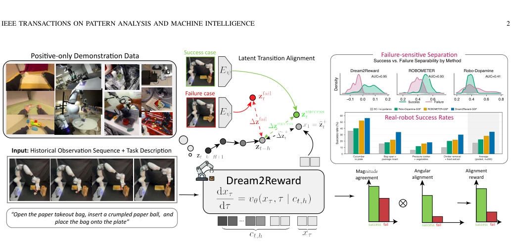
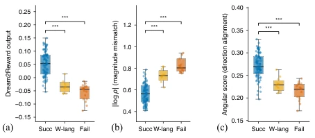
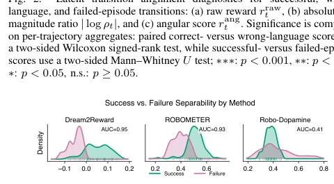
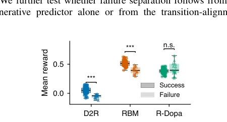
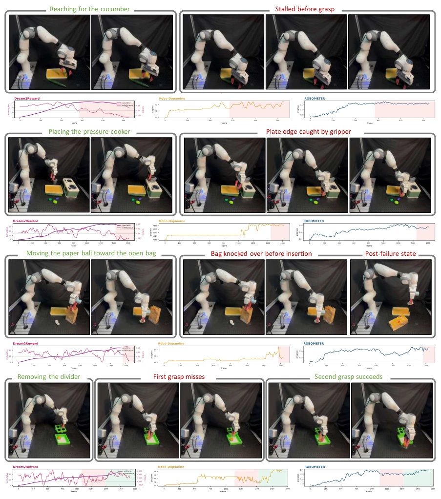
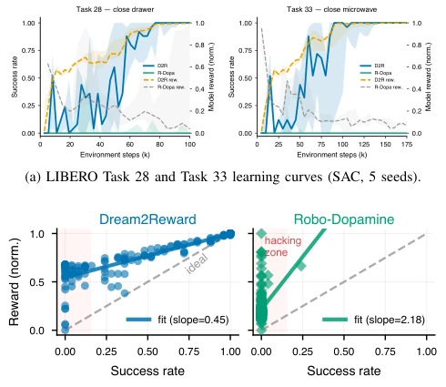
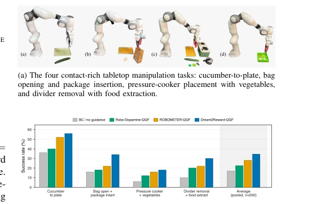

This paper delivers another 'wake-up call' to the robot reinforcement learning community. The core logic of Dream2Reward is actually quite simple: don't just look at where the robot ended up (state), but whether its last step was correct (action/transition). Existing progress-based reward models (such as Robo-Dopamine [5], ROBOMETER [6]) are like referees who only look at the finish line; as long as the robot appears to be closer to the finish line, even if it is walking backwards or spinning in place, it gives you a high score, leading strategies to easily 'cut corners' or even 'hallucinate'. Dream2Reward, on the other hand, is like a strict movement coach; it does not care whether you ultimately succeed, only whether your recent displacement vector is consistent in direction and appropriate in magnitude with the 'successful demonstration' vector. This 'transition alignment' approach is indeed more sensitive than simple state similarity, effectively penalizing those 'beautiful-looking but distorted-action' failed attempts. However, this method relying on generative models to predict 'ideal displacement' still has concerns regarding computational overhead and training stability, after all, asking the model to 'dream' (predict the future) to score, if the dream is too far-fetched, the reward signal will drift.
In reinforcement learning (RL) for embodied intelligence, reward function design has always been the biggest bottleneck, especially in contact-rich, partially observable manipulation tasks. Existing general reward models mainly rely on 'task progress' (Progress-based) or 'state similarity' to provide feedback [4], [5], [6]. However, these methods suffer from serious 'state ambiguity' problems: when the robot executes incorrect actions (such as backward movement, excessive collision, or stagnation), the resulting observation state may happen to be in the later stage of the successful trajectory, leading to progress rewards still being very high. For example, although Robo-Dopamine [5] and ROBOMETER [6] utilize multimodal data, they essentially still evaluate progress at the state level, unable to distinguish between 'arriving via the correct path' and 'accidentally arriving via the wrong path'. This ambiguity makes strategies prone to falling into 'reward hacking', i.e., achieving high scores through behaviors that appear progressive visually but actually violate physical laws or task logic. Furthermore, existing methods often require failure annotations, synthetic negative samples, or complex counterfactual relabeling [7], which is difficult to obtain in practical scenarios with only positive sample demonstration data. Therefore, there is an urgent need for a causal reward mechanism that utilizes only positive samples and can directly evaluate action transition quality (Transition Quality).

Fig. 1. Illustration of the Dream2Reward framework. From a language-conditioned visual history, a latent transition model trained only on positive demonstration data predicts the successful latent displacement c ∆z + t . At inference, a candidate transition is encoded into its own displacement ∆zcand t , and the reward is the angular alignment and magnitude agreement between the two: transitions along the success direction with an appropriate step size score high, whereas wrong-direction, overshooting, or stagnant transitions score low.
Dream2Reward proposes a reward framework based on 'Latent Transition Alignment', its core is upgrading reward calculation from 'state comparison' to 'transition vector comparison'. The overall process is divided into two stages: training and inference. First, in the training stage, the model utilizes only positive sample demonstration data (Positive Demonstrations), learning a 'language-conditioned success latent transition field' through a Conditional Flow-Matching model. The model conditions on visual history sequences and language goals, predicting the 'ideal latent endpoint' starting from the current state under successful execution, thereby deriving the 'ideal latent displacement' (cΔz+). Second, in the inference stage, for every transition actually executed by the robot, the model encodes it as a 'candidate latent displacement' (Δzcand). Reward calculation no longer compares states, but calculates the alignment between candidate displacement and ideal displacement in two dimensions: 1) Direction Alignment (Angular Alignment): uses signed cosine similarity, penalizing backward or deviating motion from the correct direction; 2) Magnitude Agreement: uses symmetric log ratio, penalizing stagnation (magnitude too small) or overshoot (magnitude too large). The final reward is the product of these two components, supplemented with magnitude missing penalty and truncation processing. This design ensures the reward is causal (relying only on transition start prediction and end observation), and requires no failure annotations or negative samples, directly utilizing local dynamic structures in positive samples to guide policy optimization.
The paper validates the effectiveness of Dream2Reward across multiple dimensions. First, in mechanism diagnosis, by comparing successful demonstrations, incorrect language instructions, and failure trajectories, it proves that this method can significantly distinguish correct and incorrect transitions (AUC=0.95), outperforming ROBOMETER (0.93) and Robo-Dopamine (0.41). Second, in online reinforcement learning (LIBERO tasks), the SAC policy driven by Dream2Reward achieved nearly 100% success rate, while Robo-Dopamine completely failed, and Dream2Reward effectively avoided the 'reward hacking' phenomenon of high reward low success. In offline RL and real robot experiments, the method also demonstrated stronger generalization and robustness. Ablation studies show that the direction component and magnitude component are indispensable, and language conditioning is crucial for distinguishing different tasks. Furthermore, analysis shows that Dream2Reward's reward signal is more sensitive in time, able to provide immediate feedback on local failures (such as grasping stagnation), while progress-based rewards are often lagging.

Fig. 2. Latent transition alignment diagnostics for successful, wrong- language, and failed-episode transitions: (a) raw reward rraw t , (b) absolute log magnitude ratio | log ρt|, and (c) angular score rang t . Significance is computed on per-trajectory aggregates: paired correct- versus wrong-language scores use a two-sided Wilcoxon signed-rank test, while successful- versus failed-episode scores use a two-sided Mann–Whitney U test; ∗∗∗: p < 0.001, ∗∗: p < 0.01, ∗: p < 0.05, n.s.: p ≥0.05.

Fig. 3. Failure-detection ROC-AUC on identical real-robot trajectories, using negative episode-mean native rewards.

Fig. 4. Evaluation-normalized success–failure gap on identical trajectories; significance uses a two-sided Mann–Whitney U test on per-trajectory scores. D2R denotes Dream2Reward, RBM denotes ROBOMETER, and R-Dopa denotes Robo-Dopamine.

Fig. 5. Representative real-robot failure and recovery traces. Each block shows task snapshots on the top and synchronized reward traces below, comparing Dream2Reward with the progress-based baselines ROBOMETER and Robo-Dopamine on the same rollout. Green labels indicate nominal task progress or successful recovery, red labels indicate failure events or post-failure states, and the shaded intervals are qualitative annotations for the displayed traces. The examples cover stalled grasping, paper-bag cleanup failure, plate-edge interference during grasping, and recovery after an initial grasp miss.

Fig. 6. Online RL comparison between Dream2Reward and Robo-Dopamine under the same SAC pipeline. (a) True task success and evaluation-normalized model reward on two manipulation tasks over five seeds; ert ∈[0, 1] is used only for visualization. (b) Model reward versus true success across evaluation checkpoints. The line shows a least-squares fit, and the shaded upper-left region indicates high predicted reward despite low task success.

Fig. 7. Real-robot offline RL with Q-guided flow on four tabletop manipula- tion tasks: the task suite (top; panels (a)–(d) show the four tasks) and per-task offline RL success rates (bottom).